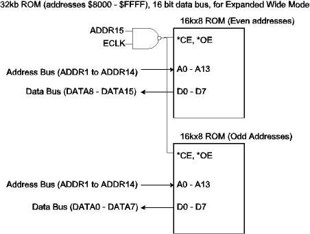
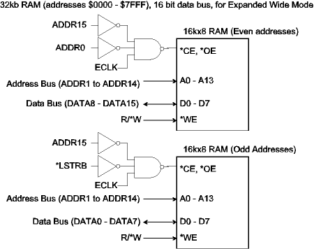

| Previous Section | Next Section | Index | Questions | Search the Text |
This section applies only to the 68HC12 component. The next section describes the 68HCS12.
Normal Expanded Wide mode configures the microcontroller so that ports C and D are used as a 16 bit word data bus, greatly increasing the performance over the 8 bit data bus in Normal Expanded Narrow mode. Because 8 bit data is supported, the interface is capable of handling 8 bit as well as 16 bit transfers, and this capability requires the interfacing to be more complicated than the Narrow mode for any device than can be written to, such as RAM or external registers on peripherals.
Memory devices are typically 8 bits wide, so are used in pairs, one contains the even addresses and connects to the high order 8 bits of the data bus (port C), while the other contains the odd addresses and connects to the low order 8 bits of the data bus (port D). The least significant line of the address bus, ADDR0, is not used to address within the individual part. Reads and writes of 16 bit words, which are always aligned (the word address evenly divisible by two) simply access both devices simultaneously. Attempts to read and write 16 bit words at non-aligned (odd) addresses will cause the processor to split the access into two separate byte reads or writes. This operation increases the access time noticeably and should be avoided if possible by always placing word data at aligned addresses.
To perform an 8 bit memory access, the microcontroller uses the high order 8 lines of the data bus if the address is even, and the low order 8 lines if the address is odd. This will correctly match with 16 bit wide memory banks. On a memory read, it does not matter if the other half of the memory bank is read, so interfacing ROM is straight forward:

For RAM devices, it is important to not write to the byte which is not involved with the memory cycle. To accomplish this, the least significant address line and an additional control line *LSTRB are used. These signals determine the type of operation according to the following table:
| *LSTRB | ADDR0 | R/*W | Type of Access |
|---|---|---|---|
| 0 | 0 | 0 | 16 bit write (even address) |
| 0 | 0 | 1 | 16 bit read (even address) |
| 0 | 1 | 0 | 8 bit write (odd address) |
| 0 | 1 | 1 | 8 bit read (odd address) |
| 1 | 0 | 0 | 8 bit write (even address) |
| 1 | 0 | 1 | 8 bit read (even address) |
| 1 | 1 | 0 | Cannot occur for external memory accesses |
| 1 | 1 | 1 | Cannot occur for external memory accesses |
The last two rows are for 16 bit reads and writes of odd addresses, which can only be performed in internal RAM.
Using this table, we can safely interface RAM:

Peripheral devices almost always have 8 bit data paths, and it is unlikely that one would want to have them run simultaneously in pairs. They can be connected such that the device either uses even or odd byte addresses. ADDR0 and *LSTRB are not used. Care must be taken to not attempt to access the missing locations either explicitly or via a word access as a write would store erroneous data into the device. Another solution will be shown in the discussion about chip selects, in that it is possible to have certain address ranges cause the microcontroller to behave as though it were in Expanded Narrow mode.
Continue with Multiplexed Address and Data Busses.
Return to the Index.